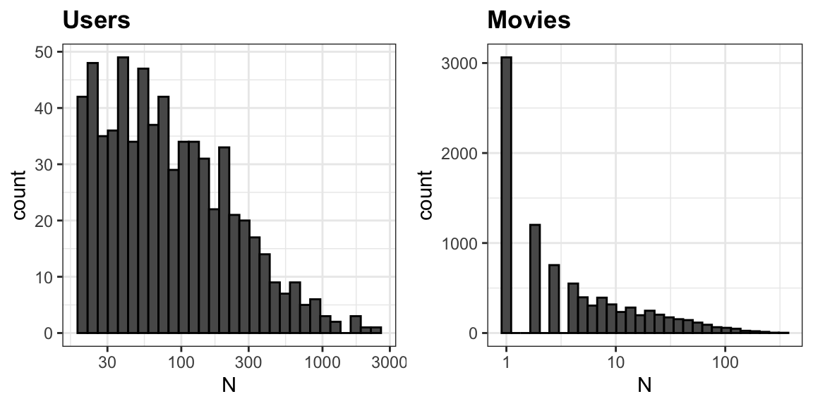
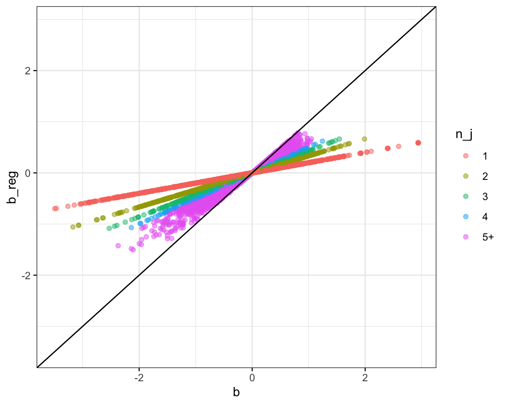

library(data.table)
library(dslabs)
movielens |> tibble:::tibble() |> head(5)
#> # A tibble: 5 × 7
#> movieId title year genres userId rating timestamp
#> <int> <chr> <int> <fct> <int> <dbl> <int>
#> 1 31 Dangerous Minds 1995 Drama 1 2.5 1.26e9
#> 2 1029 Dumbo 1941 Anima… 1 3 1.26e9
#> 3 1061 Sleepers 1996 Thril… 1 3 1.26e9
#> 4 1129 Escape from New York 1981 Actio… 1 2 1.26e9
#> 5 1172 Cinema Paradiso (Nuovo c… 1989 Drama 1 4 1.26e924 Regularization
24.1 Case study: recommendation systems
Recommendation systems, such as the one used by Amazon, operate by analyzing the ratings that customers give to various products. These ratings form a large dataset. The system uses this data to predict how likely a specific user is to favorably rate a particular product. For example, if the system predicts that a user is likely to give a high rating to a certain book or gadget, it will recommend that item to them. In essence, the system tries to guess which products a user will like based on the ratings provided by them and other customers for various items. This approach helps in personalizing recommendations to suit individual preferences.
During its initial years of operation, Netflix used a 5-star recommendation system. One star suggested it was not a good movie, whereas five stars suggested it was an excellent movie. Here, we provide the basics of how these recommendations are made, motivated by some of the approaches taken by the winners of the Netflix challenges.
In October 2006, Netflix offered a challenge to the data science community: improve our recommendation algorithm by 10% and win a million dollars. In September 2009, the winners were announced1. You can read a summary of how the winning algorithm was put together here: http://blog.echen.me/2011/10/24/winning-the-netflix-prize-a-summary/ and a more detailed explanation here: https://www2.seas.gwu.edu/~simhaweb/champalg/cf/papers/KorenBellKor2009.pdf. We will now show you some of the data analysis strategies used by the winning team.
The Netflix data is not publicly available, but the GroupLens research lab2 generated their own database with over 20 million ratings for over 27,000 movies by more than 138,000 users. We make a small subset of this data available via the dslabs package:
Each row represents a rating given by one user to one movie.
Because we are working with a relatively large dataset, we will convert the data frame to a data.table object to take advantage of more efficient data wrangling.
dt <- as.data.table(movielens)We can see the number of unique users that provided ratings and how many unique movies were rated:
If we multiply those two numbers, we get a figure exceeding 5 million, yet our dataset contains only about 100,000 rows. This tells us that not every user rated every movie. In fact, the median number of movies rated per user is 71. We can think of the data as a very large matrix, with users as rows and movies as columns, filled with many missing entries. The goal of a movie recommendation system is to accurately predict those missing values.
Let’s look at some of the general properties of the data to better understand the challenges.
The first thing we notice is that some movies receive far more ratings than others. The distribution below highlights this disparity, which isn’t surprising, blockbuster films tend to be seen and rated by millions, while niche or independent films attract far fewer viewers. A second observation is that users vary significantly in how active they are at rating movies:

We need to build an algorithm with the collected data that will then be applied outside our control when users look for movie recommendations. To test our idea, we will split the data into a training set, which we will use to develop our approach, and a test set in which we will compute the accuracy of our predictions.
We will do this only for users that have provided at least 100 ratings.
dt <- dt[, if (.N >= 100) .SD, by = userId]For each one of these users, we will split their ratings into 80% for training and 20% for testing.
We keep only the columns we use in this analysis and convert userId ad movieId to characters so we can use as indeces:
dt[, `:=`(userId = as.character(userId), movieId = as.character(movieId))]
cols <- c("userId", "movieId", "title", "rating")
test_set <- dt[test_ind, ..cols]
train_set <- dt[-test_ind, ..cols]
## Remove movies in the test set that have no ratings in the training set
test_set <- test_set[movieId %in% train_set$movieId]We will use the array representation described in Section 17.6, for the training data. Specifically, we denote ranking for movie \(j\) by user \(i\) as \(y_{ij}\).
Note that two different movies can have the same title. For example, our dataset has three movies titled “King Kong”. Titles are therefore not unique and we can’t use them as IDs.
Although it is convenient to use the notation \(y_{ij}\), it is important to remember that we do not observe a value for every pair \((i,j)\). While the total number of users \(i = 1, \dots, I\) and movies \(j = 1, \dots, J\) defines a theoretical space of \(I \times J\) possible ratings, the actual number of observed ratings,denoted by \(N\), is typically much smaller. In our example, \(N\) is far less than \(I \times J\), reflecting the fact that most users rate only a small fraction of all available movies. We will use the mathematical notation \(\sum_{i,j}\) to represent a summation over all \(N\) observed pairs.
Loss function
The Netflix challenge decided on a winner based on the root mean squared error (RMSE) computed on the test set. Specifically, if \(y_{ij}\) is the rating for movie \(j\) by user \(i\) in the test set and \(\hat{y}_{ij}\) is our prediction based on the training set, RMSE was defined as:
\[ \mbox{RMSE} = \sqrt{\frac{1}{N} \sum_{ij} (y_{ij} - \hat{y}_{ij})^2} \]
with \(N\) being the number of user/movie combinations for which we made predictions and the sum occurring over all these combinations.
We can interpret the RMSE similarly to a standard deviation: it is the typical error we make when predicting a movie rating. If this number is larger than 1, it means our typical error is larger than one star, which is not good. We define a function to compute this quantity for any set of residuals:
In this chapter and the next, we introduce two concepts, regularization and latent factor analysis, that were used by the winners of the Netflix challenge to obtain the winning RMSE.
In Chapter 30, we provide a formal discussion of the mean squared error.
A first model
Let’s start by building the simplest possible recommendation system: we predict the same rating for all movies regardless of user. What number should this prediction be? We can use a model based approach to answer this. A model that assumes the same rating for all movies and users with all the differences explained by random variation would look as follows:
\[ Y_{ij} = \mu + \varepsilon_{ij} \]
with \(\varepsilon_{ij}\) independent errors sampled from the same distribution centered at 0 and \(\mu\) the true rating for all movies. We know that the estimate that minimizes the RMSE is the least squares estimate of \(\mu\) and, in this case, is the average of all ratings:
mu <- mean(train_set$rating)If we predict all unknown ratings with \(\hat{\mu}\) we obtain an RMSE of
rmse(test_set$rating - mu)
#> [1] 1.04Mathematical theory tells us that if you plug in any other number, you get a higher RMSE. Here is an example:
rmse(test_set$rating - 3)
#> [1] 1.16To win the grand prize of $1,000,000, a participating team had to get an RMSE of about 0.857. So we can definitely do better!
User effects
If we visualize the average rating for each user
we notice that there is substantial variability across users: some users are very cranky and others love most movies. To account for this, we can use a linear model with a treatment effect \(\alpha_i\) for each user. The sum \(\mu + \alpha_i\) can be interpreted as the typical rating user \(i\) gives to movies. We can write the model as:
\[ Y_{ij} = \mu + \alpha_i + \varepsilon_{ij} \]
Statistics textbooks refer to the \(\alpha\)s as treatment effects. In the Netflix challenge papers, they refer to them as bias.
Note that this model has 263 user effect parameters.
We can again use least squares to estimate the \(\alpha_i\) in the following way:
fit <- lm(rating ~ userId, data = train_set)Note that because there are hundreds of \(\alpha_i\), as each movie gets one, the lm() function will be slow here. In this case, we can show that the least squares estimate \(\hat{\alpha}_i\) is just the average of \(y_{ij} - \hat{\mu}\) for each user \(i\). So we can compute them this way:
Note that going forward, in the code, we use a to represent \(\alpha\), b to represent \(\beta\), and we drop the hat notation to represent estimates.
Let’s see how much our prediction improves once we use \(\hat{y}_{ij} = \hat{\mu} + \hat{\alpha}_i\). Because we know ratings can’t be below 0.5 or above 5, we define the function clamp:
to keep predictions in that range and then compute the RMSE:
resid <- with(test_set, rating - clamp(mu + a[userId]))
rmse(resid)
#> [1] 0.958The RMSE is reduced so we already see an improvement. But can we make it better?
Movie effects
We know from experience that some movies are just generally rated higher than others. We can use a linear model with a treatment effect \(\beta_j\) for each movie, which can be interpreted as movie effect or the difference between the average ranking for movie \(j\) and the overall average \(\mu\):
\[ Y_{ij} = \mu + \alpha_i + \beta_j +\varepsilon_{ij} \]
We can again use least squares to estimate the \(b_i\) in the following way:
fit <- lm(rating ~ userId + movieId, data = train_set)However, this code generates a very large matrix with all the indicator variables needed to represent all 263 users and 8133 movies and the code will take time to run. So instead, for illustrative purposes, we use an approximation used by the wining team: first computing the least square estimate \(\hat{\mu}\) and \(\hat{\alpha}_i\), and then estimating \(\hat{\beta}_j\) as the average of the residuals \(y_{ij} - \hat{\mu} - \hat{\alpha}_i\):
We can now construct predictors with this code and see that our RMSE improves.
resid <- with(test_set, rating - clamp(mu + a[userId] + b[movieId]))
rmse(resid)
#> [1] 0.911Penalized least squares
If we look at the top movies based on our estimates of the movie effect \(\hat{\beta}_j\), we find that they are all obscure movies, with just one rating:
top_movies <- names(b[b == max(b)])
train_set[, .(n = .N), by = .(movieId, title)][movieId %in% top_movies]
#> movieId title n
#> <char> <char> <int>
#> 1: 1450 Prisoner of the Mountains (Kavkazsky plennik) 1
#> 2: 1563 Dream With the Fishes 1
#> 3: 1819 Storefront Hitchcock 1
#> 4: 3892 Anatomy (Anatomie) 1
#> 5: 4076 Two Ninas 1
#> 6: 4591 Erik the Viking 1
#> 7: 4796 Grass Is Greener, The 1
#> 8: 5427 Caveman 1Do we really think these are the top movies in our database?
Note that only one of these top rated movies appears in our test set and it received the worst rating:
test_set[movieId %in% top_movies, .(movieId, title, rating)]
#> movieId title rating
#> <char> <char> <num>
#> 1: 3892 Anatomy (Anatomie) 1Large positive or negative estimates should be treated with caution when they are based on just a few ratings. These estimates are more likely to be noisy. And since large prediction errors can increase our Root Mean Squared Error (RMSE), it’s better to be conservative when we are uncertain.
In earlier chapters, we handled uncertainty by using standard errors and confidence intervals. But when making predictions, we don’t get to give a range, we must pick a single number. That’s where regularization comes in.
Regularization is a technique that helps us make more stable predictions when dealing with small sample sizes. It does this by shrinking large estimates toward zero, especially when they are based on only a few data points. In this way, regularization has similarities to the Bayesian shrinkage ideas we discussed in Chapter 11.
As an example, suppose the overall average movie rating is \(\mu = 3\). Now imagine:
- Movie 1 has 100 user ratings.
- Movies 2, 3, 4, and 5 each have only 1 user rating.
If we estimate movie effects using least squares, we subtract \(\mu\) from each movie’s average rating. For Movie 1, this average is based on 100 users, so it’s a pretty reliable estimate. But for Movies 2-5, we are relying on a single rating, which is much less reliable. These one-off ratings might look accurate now, but there is a good chance they won’t generalize well to new users.
In fact, for Movies 2–5, it might be safer to ignore the single rating and simply assume they are average movies. This cautious approach helps prevent extreme predictions based on limited data. By shrinking these uncertain estimates toward the overall average, we make the results more regularm hence the term regularization. This strategy often leads to smaller errors when predicting new data, ultimately helping reduce the RMSE.
A penalized approach
The most common way to regularize predictions is through penalized regression, which controls how much the movie effects \(\beta_j\) are allowed to vary. Instead of minimizing only the sum of squared errors, we modify the objective function by adding a penalty term that discourages large values of \(\beta_j\), especially when these estimates are based on limited data. Specifically, we redefine the quantity we minimize by adding a penalty to the residual sum of squares:
\[ \sum_{i,j} \left(y_{ij} - (\mu + \alpha_i + \beta_j) \right)^2 + \lambda \sum_{j} \beta_j^2 \] The first term is just the sum of squares and the second is a penalty that gets larger when many \(\beta_j\)s are large.
In this particular model, using calculus, we can actually show that, if we know \(\mu\) and the \(\alpha_i\)s, the values of \(\beta_j\) that minimize this equation are:
\[ \hat{\beta}_j(\lambda) = \frac{1}{n_j + \lambda} \sum_{i=1}^{n_i} \left(y_{ij} - \mu - \alpha_i\right) \]
where \(n_j\) is the number of ratings made for movie \(j\).
Let’s examine what happens when we set the penality term \(\lambda\) to 4 and we plug our previously calcualted estimates \(\hat{\mu}\) and \(\hat{\alpha}_i\) to estimate obtain a regularized estimate \(\hat{\beta}_j(\lambda)\).
To see how the estimates shrink, let’s make a plot of the regularized estimates versus the least squares estimates.

We see that some of the largest movie effects estimates come from movies with few ratings and that regularization shrinks these towards 0.
Now, let’s look at the top 5 best movies based on the penalized estimates \(\hat{b}_i(\lambda)\):
top_movies <- names(sort(-b_reg)[1:5])
train_set[, .(n = .N), by = .(movieId, title)][movieId %in% top_movies]
#> movieId title n
#> <char> <char> <int>
#> 1: 858 Godfather, The 107
#> 2: 318 Shawshank Redemption, The 138
#> 3: 1276 Cool Hand Luke 32
#> 4: 2318 Happiness 18
#> 5: 50 Usual Suspects, The 109These make more sense with some movies that are watched more and have more ratings in the training set.
This approach will have our desired effect: when our sample size \(n_j\) is very large, we obtain a stable estimate and the penalty \(\lambda\) is effectively ignored since \(n_j+\lambda \approx n_j\). Yet when the \(n_j\) is small, then the estimate \(\hat{\beta}_i(\lambda)\) is shrunken towards 0. The larger the \(\lambda\), the more we shrink.
The RMSE also improves:
resid <- with(test_set, rating - clamp(mu + a[userId] + b_reg[movieId]))
rmse(resid)
#> [1] 0.8924.2 Penalized least squares
In the previous section, we motivated penalizing the size of the movie effect estimates to reduce overfitting. This idea generalizes to a very popular approach for fitting linear models called penalized least squares. If you have a multivariate linear model
\[ Y_i = \beta_0 + \sum_{j=1}^p x_{ij}\beta_j + \varepsilon_i, \quad i = 1, \dots, N \] with a large number of parameters \(p\), fitting a least squares model can lead to overfitting. As discussed in the previous section, one way to address this issue is to penalize the size of the parameter estimates by using a penalized least squares approach:
\[ \frac{1}{N}\sum_{i=1}^N \left( y_i - \left(\beta_0 + \sum_{j=1}^p x_{ij}\beta_j\right)\right)^2 + \lambda \sum_{j=1}^p \beta_j^2 \]
The first term is the normalized residual sum of squares, minimized by the lm function in R. We normalize, divide by \(N\), so that the interpretation of \(\lambda\) does not depend on data size. The second term is a penalty that increases with the size of the coefficients. The mean level \(\beta_0\) is not penalized.
The concept of penalization extends beyond least squares and can be applied to more general models, such as penalized likelihood.
We can use calculus and linear algebra to find the \(\boldsymbol{\beta} = (\beta_1, \dots, \beta_p)^\top\) that minimizes this expression. The MASS package includes the lm.ridge function to perform this computation. It works similarly to lm, but requires you to specify a \(\lambda\):
This approach is called ridge regression, which is just another name for least squares with an the penalty term \(\lambda \sum_{j=1}^p \beta_j^2\).
Our movie rating model is also linear, with one parameter for each user and one for each movie. Regularization is especially important in this setting given the large number of parameters. We can compute regularized estimates using:
Similar to the reason we didn’t run lm, we don’t run this because it’s computationally expensive, userId and movieId are factors that result in over 8,000 indicator variables in the design matrix (see [Section 17.6]).
In the next section, we present an approximation that allows fast estimation of the model parameters.
The linear model variables \(x_{i1},\dots,x_{ip}\) needed to build a movie recommendation system would include hundreds of indicator variables, one for each movie and one for each user. Although we don’t cover the mathematical or computational details in this book, it is important to note that much more efficient algorithms exist than those used by general-purpose functions like lm and lm.ridge. These functions are not optimized for scenarios where most of the variables in each row are zeros, as is the case here. Therefore, we do not recommend using them for problems of this scale and sparsity.
24.3 Selecting Penalty Terms
How do we select $$? In [Chapter 30], we describe formal methods, but here we simply compute RMSE for a range of $$ values. We implement a Alternative Least Square (ALS) type algorithm to estimate \(\alpha\) and \(\beta\). Namely, if because if the \(\alpha\)s are known we have a closed mathematical solution for the penalized lease square etimate of \(\beta\), and similar for the reverse case, alternating iteratively converages to the actual penalized squares estimates.
n_iter <- 10
lambdas <- seq(0, 0.0002, len = 100)
N <- nrow(train_set)
mu <- mean(train_set$rating)
rmses <- sapply(lambdas, function(lambda){
b <- with(train_set[, .(b = 0), by = movieId], setNames(b, movieId))
for (iter in 1:n_iter) {
a <- with(train_set[, .(a = mean(rating - mu - b[movieId])), by = userId],
setNames(a, userId))
tmp <- train_set[, .(b = sum(rating - mu - a[userId])/(.N + N*lambda)), by = movieId]
b <- with(tmp, setNames(b, movieId))
}
resid <- with(test_set, rating - clamp(mu + a[userId] + b[movieId]))
rmse(resid)
})We then plot RMSE as a function of \(\lambda\):
plot(lambdas, rmses, type = "l")
The minimum RMSE is obtained for:
lambdas[which.min(rmses)]
#> [1] 3.43e-05We use this \(\lambda\) to compute the final regularized estimates:
n_iter <- 10
lambda <- lambdas[which.min(rmses)]
N <- nrow(train_set)
mu <- mean(train_set$rating)
b <- with(train_set[, .(b = 0), by = movieId], setNames(b, movieId))
for (iter in 1:n_iter) {
a <- with(train_set[, .(a = mean(rating - mu - b[movieId])), by = userId],
setNames(a, userId))
tmp <- train_set[, .(b = sum(rating - mu - a[userId])/(.N + N*lambda)), by = movieId]
b <- with(tmp, setNames(b, movieId))
}And make final predictions:
resid <- with(test_set, rating - clamp(mu + a[userId] + b[movieId]))
rmse(resid)
#> [1] 0.874We can see that regularization improves our RMSE by comparing to the other three approaches, but now using the least square estimates rather than the approximations.
| model | RMSE |
|---|---|
| Just the mean | 1.043 |
| User effect | 0.958 |
| User + movie effect | 0.893 |
| Regularized | 0.874 |
24.4 Exercises
1. For the movielens data, compute the number of ratings for each movie and then plot it against the year the movie was released. Use the square root transformation on the counts.
2. We see that, on average, movies that were released after 1993 get more ratings. We also see that with newer movies, starting in 1993, the number of ratings decreases with year: the more recent a movie is, the less time users have had to rate it.
Among movies that came out in 1993 or later, what are the 25 movies with the most ratings per year? Also, report their average rating.
3. From the table constructed in the previous example, we see that the most rated movies tend to have above average ratings. This is not surprising: more people watch popular movies. To confirm this, stratify the post 1993 movies by ratings per year and compute their average ratings. Make a plot of average rating versus ratings per year and show an estimate of the trend.
4. In the previous exercise, we see that the more a movie is rated, the higher the rating. Suppose you are doing a predictive analysis in which you need to fill in the missing ratings with some value. Which of the following strategies would you use?
- Fill in the missing values with average rating of all movies.
- Fill in the missing values with 0.
- Fill in the value with a lower value than the average since lack of rating is associated with lower ratings. Try out different values and evaluate prediction in a test set.
- None of the above.
5. The movielens dataset also includes a time stamp. This variable represents the time and data in which the rating was provided. The units are seconds since January 1, 1970. Create a new column date with the date. Hint: Use the as_datetime function in the lubridate package.
6. Compute the average rating for each week and plot this average against day. Hint: Use the round_date function before you group_by.
7. The plot shows some evidence of a time effect. If we define \(d_{u,i}\) as the day for user’s \(u\) rating of movie \(i\), which of the following models is most appropriate:
- \(Y_{u,i} = \mu + b_i + \beta_j + d_{u,i} + \varepsilon_{u,i}\).
- \(Y_{u,i} = \mu + b_i + \beta_j + d_{u,i}\beta + \varepsilon_{u,i}\).
- \(Y_{u,i} = \mu + b_i + \beta_j + d_{u,i}\beta_i + \varepsilon_{u,i}\).
- \(Y_{u,i} = \mu + b_i + \beta_j + f(d_{u,i}) + \varepsilon_{u,i}\), with \(f\) a smooth function of \(d_{u,i}\).
8. The movielens data also has a genres column. This column includes every genre that applies to the movie. Some movies fall under several genres. Define a category as whatever combination appears in this column. Keep only categories with more than 1,000 ratings. Then compute the average and standard error for each category. Plot these as error bar plots.
9. The plot shows strong evidence of a genre effect. If we define \(g_{u,i}\) as the genre for user’s \(u\) rating of movie \(i\), which of the following models is most appropriate:
- \(Y_{u,i} = \mu + b_i + \beta_j + d_{u,i} + \varepsilon_{u,i}\).
- \(Y_{u,i} = \mu + b_i + \beta_j + d_{u,i}\beta + \varepsilon_{u,i}\).
- \(Y_{u,i} = \mu + b_i + \beta_j + \sum_{k=1}^K x_{u,i} \beta_k + \varepsilon_{u,i}\), with \(x^k_{u,i} = 1\) if \(g_{u,i}\) is genre \(k\).
- \(Y_{u,i} = \mu + b_i + \beta_j + f(d_{u,i}) + \varepsilon_{u,i}\), with \(f\) a smooth function of \(d_{u,i}\).
An education expert is advocating for smaller schools. The expert bases this recommendation on the fact that among the best performing schools, many are small schools. Let’s simulate a dataset for 100 schools. First, let’s simulate the number of students in each school.
Now let’s assign a true quality for each school completely independent from size. This is the parameter we want to estimate.
We can see that the top 10 schools are:
schools |> top_n(10, quality) |> arrange(desc(quality))Now let’s have the students in the school take a test. There is random variability in test taking so we will simulate the test scores as normally distributed with the average determined by the school quality and standard deviations of 30 percentage points:
10. What are the top schools based on the average score? Show just the ID, size, and the average score.
11. Compare the median school size to the median school size of the top 10 schools based on the score.
12. According to this test, it appears small schools are better than large schools. Five out of the top 10 schools have 100 or fewer students. But how can this be? We constructed the simulation so that quality and size are independent. Repeat the exercise for the worst 10 schools.
13. The same is true for the worst schools! They are small as well. Plot the average score versus school size to see what’s going on. Highlight the top 10 schools based on the true quality. Use the log scale transform for the size.
14. We can see that the standard error of the score has larger variability when the school is smaller. This is a basic statistical reality we learned in the probability and inference sections. In fact, note that 4 of the top 10 schools are in the top 10 schools based on the exam score.
Let’s use regularization to pick the best schools. Remember regularization shrinks deviations from the average towards 0. So to apply regularization here, we first need to define the overall average for all schools:
and then define, for each school, how it deviates from that average. Write code that estimates the score above average for each school, but dividing by \(n + \lambda\) instead of \(n\), with \(n\) the school size and \(\lambda\) a regularization parameter. Try \(\lambda = 3\).
15. Notice that this improves things a bit. The number of small schools that are not highly ranked is now 4. Is there a better \(\lambda\)? Find the \(\lambda\) that minimizes the RMSE = \(1/100 \sum_{i=1}^{100} (\mbox{quality} - \mbox{estimate})^2\).
16. Rank the schools based on the average obtained with the best \(\alpha\). Note that no small school is incorrectly included.
17. A common mistake to make when using regularization is shrinking values towards 0 that are not centered around 0. For example, if we don’t subtract the overall average before shrinking, we actually obtain a very similar result. Confirm this by re-running the code from exercise 14, but without removing the overall mean.